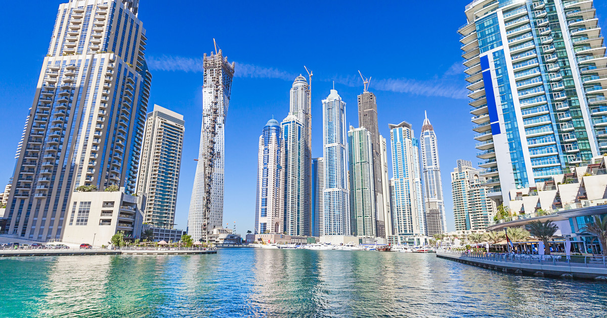
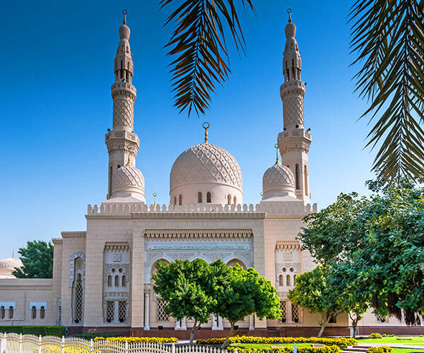
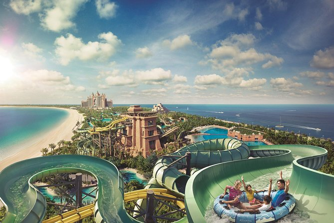

On ne la présente plus. En symbole des plateformes d’observation, Burj Khalifa héberge à son 124ème étage « At The Top » : un point de vue spectaculaire, très prisé par les visiteurs (pensez au billet coupe file pour éviter les longues files d’attente). Véritable prouesse d’ingénierie, cette tour qui donne l’impression de percer le ciel a été élue plus haut bâtiment du monde (pour l’instant) avec 828 mètres de hauteur (soit plus de 2,5 fois la Tour Eiffel). Achevée en seulement six ans, elle illustre aujourd’hui la volonté de Dubaï d’atteindre de nouveaux sommets !
Dans les années 70, Dubaï n'était qu'un petit village de pêcheur à l'embouchure d'un bras de mer. Aujourd'hui, la ville-état compte 2,3 millions d'habitants si l'on comprend son agglomération avec les villes de Charjah, Ajman et Oumm al Qaïwaïn, et les gratte-ciel n'ont cessé de sortir de terre, atteignant des hauteurs jusque là jamais vues, en atteste le plus haut bâtiment du monde le Burj Khalifa. A Dubaï, tout est moderne, ses hôtels de classe mondiale, comme le Burj Al Arab, hôtel 7 étoiles, ou son métro, mais aussi ses centres commerciaux immenses... Et l'Exposition Universelle de 2020 prévue à Dubaï ne freinera pas l'avancée des progrès et des constructions... Malgré un héritage historique assez pauvre, Dubaï est une destination où les activités prolifèrent, dans le désert ou dans les airs. Que vous y soyez pour une escale d'un jour ou deux, ou pour une semaine, un séjour à Dubaï sera toujours bien rempli. Attention toutefois aux grandes chaleurs de l'été qui ne sont pas supportables...
BURJ KHALIFA

DUBAI MARINA
Aquarium et Zoo sous-marin Envie de visiter Dubaï sous son meilleur jour ? Appréciée des locaux comme des visiteurs, la Dubaï Marina dévoile le côté on ne peu plus moderne de la ville. Considéré comme le « Nouveau Dubaï » , le quartier a érigé de nombreux buildings en son sein dans lequel on retrouve de nombreux hôtels, centres commerciaux et supermarchés. Réputée dynamique et animée, Dubaï Marina est un lieu de rendez-vous incontournable à Dubaï : on aime s’y promener, y manger, y faire la fête ou simplement observer son jeu de lumière une fois la nuit tombée. Les amateurs de sensations fortes pourront y réserver une session de jet ski pendant que d’autres vivront de farniente à bord d’un yacht le temps d’une croisière de luxe. Et si vous aimez les panoramas urbains, montez au 52ème étage de l’Hotel Dubai Marriott Harbour : en plus d’héberger des suites idéales pour un séjour inoubliable, ce dernier abrite le bar-restaurant « The Observatory » qui vous promet une vue à couper le souffle sur Dubaï Marina !

MOSQUEE DE JUMEIRAH
Les non-musulmans sont rarement autorisés à voir l’intérieur d’une mosquée, mais à la mosquée de Jumeirah, le projet « Open Doors. Open Minds » (portes ouvertes, esprits ouverts) vous permet de la visiter. L’idéal est de se joindre à une visite guidée car vous pourrez non seulement découvrir le vaste intérieur de cette merveille architecturale de style fatimide, mais vous pourrez également demander ce que vous voulez au guide, que ce soit à propos de la culture locale ou de l’Islam lui-même.

LES PARCS
À Dubaï, il y a de nombreux parcs verts où l’on peut se promener et se détendre. Si vous voulez faire du jogging, ou de la marche, les parcs comme le Dubaï Creek Park, Zabeel Park, Safa Park, ou encore le Al Mamzar Beach Park, sont de bons choix. Excellents pour pique-niquer et rencontrer des gens de toutes nationalités, ces lieux sont animés car très prisés par les visiteurs et les locaux.
